import pandas as pd
import numpy as np
from pandas import read_csv
from pandas.core.common import random_state
import matplotlib.pyplot as plt
import matplotlib.ticker as ticker
import seaborn as sns
import sklearn
import umap
from scipy import stats
from sklearn.decomposition import PCA
from sklearn.preprocessing import StandardScaler
from sklearn.preprocessing import QuantileTransformer
from sklearn.model_selection import train_test_split
from sklearn.linear_model import LinearRegression
from sklearn.metrics import mean_absolute_error, r2_score
from sklearn.manifold import TSNE
from sklearn.cluster import KMeans
from sklearn.linear_model import ElasticNetCV
from sklearn.preprocessing import PowerTransformer
import hdbscan
from hdbscan import validity
import reverse_geocoder as rg
import cpi
import statsmodels.api as sm
from statsmodels.stats.outliers_influence import variance_inflation_factor
from statsmodels.tools.tools import add_constantFunction Creation
Import Libraries
def normalize(df):
"""
Returns two dataframes:
1. df_quantile: Everything forced to normal via Quantile Transformation.
2. df_comp: Each column transformed by the 'winner' of YJ vs. Quantile.
"""
df_quantile = pd.DataFrame(index=df.index)
df_comp = pd.DataFrame(index=df.index)
numeric_cols = df.select_dtypes(include=[np.number]).columns
for col in numeric_cols:
data_raw = df[col].values.reshape(-1, 1)
# Yeo-Johnson
yj_data, lmbda = stats.yeojohnson(df[col])
_, yj_p = stats.normaltest(yj_data)
# Normality test for the Quantile data
qt_engine = QuantileTransformer(output_distribution='normal',
n_quantiles=min(len(df), 1000),
random_state=42)
qt_data = qt_engine.fit_transform(data_raw).flatten()
_, qt_p = stats.normaltest(qt_data)
if yj_p >= qt_p:
# Determine suffix for YJ winner
if -0.1 <= lmbda <= 0.1: suffix = "log"
elif 0.4 <= lmbda <= 0.6: suffix = "sqrt"
elif 0.9 <= lmbda <= 1.1: suffix = "linear"
elif lmbda < 0: suffix = "inv"
else: suffix = "pow"
df_comp[f"{col}_{suffix}"] = yj_data
else:
df_comp[f"{col}_quant"] = qt_data
print(f"Experiments complete for {len(numeric_cols)} variables.")
return df_compUnsupervised Learning
Read in Parcel Data
parcel_export = pd.read_excel("/Users/melaniejensen/Library/CloudStorage/OneDrive-SouthernUtahUniversity/Math-4810_Capstone/data/Parcel Export.xlsx", sheet_name="Full Parcel Summary")
parcel_export.head()
parcel_export.shape # (53277, 53)
parcel_export.info()<class 'pandas.core.frame.DataFrame'>
RangeIndex: 53277 entries, 0 to 53276
Data columns (total 53 columns):
# Column Non-Null Count Dtype
--- ------ -------------- -----
0 ParcelId 53277 non-null object
1 TaxYear 53277 non-null int64
2 Active 53277 non-null object
3 ImpOnly 53277 non-null int64
4 IsIncluded 53277 non-null bool
5 PropType 53277 non-null int64
6 PropTypeDescription 53277 non-null object
7 Subdivision 38318 non-null object
8 Acreage 53277 non-null float64
9 Jurisdiction 53277 non-null int64
10 RecordType 53277 non-null object
11 SpecificPropType 53277 non-null int64
12 SpecificPropTypeDescription 53277 non-null object
13 Lat 51923 non-null float64
14 Lng 51923 non-null float64
15 ReviewedDate 52414 non-null float64
16 ReviewedBy 52414 non-null object
17 NbhdCode2 53277 non-null object
18 Area 53277 non-null object
19 ImpCode 53277 non-null int64
20 Res Imp Count 21893 non-null float64
21 TotGLA 21893 non-null float64
22 Tot Bsmt 21893 non-null float64
23 EffYearBuilt_Weighted 21893 non-null float64
24 Quality_Weighted 21893 non-null float64
25 MainImp.GroupCode 21893 non-null object
26 Main_StyleDesc 21893 non-null object
27 FullBaths_Total 21893 non-null float64
28 HalfBaths_Total 21893 non-null float64
29 BsmtFinishPct_Weighted 9663 non-null float64
30 Laundry_Count 21893 non-null float64
31 KitchenCount 21893 non-null float64
32 CarportArea 21893 non-null float64
33 CarportCapacity 21893 non-null float64
34 GarageArea 21893 non-null float64
35 GarageCapacity 21893 non-null float64
36 Main_YearBuilt 21893 non-null float64
37 Count_DetGarage 10572 non-null float64
38 SqFt_DetGarage 2376 non-null float64
39 Count_ DetCarport 10572 non-null float64
40 SqFt_DetCarport 500 non-null float64
41 Count_Barn 10572 non-null float64
42 Sqft_Barn 162 non-null float64
43 Count_Guest_House 10572 non-null float64
44 SqFt_Guest_House 25 non-null float64
45 Count_Pools 10572 non-null float64
46 SqFt_Pools 84 non-null float64
47 Count_Recreational_Courts 10572 non-null float64
48 SqFt_Recreational_Courts 52 non-null float64
49 Count_Shed 10572 non-null float64
50 SqFt_Shed 3587 non-null float64
51 Count_Gazebo_Pavilion 10572 non-null float64
52 SqFt_Gazebo_Pavilion 110 non-null float64
dtypes: bool(1), float64(35), int64(6), object(11)
memory usage: 21.2+ MBView the Non-Numeric Variables
::: {#cell-Non-numeric columns .cell cache=‘true’ execution_count=4}
non_numeric_cols = parcel_export.select_dtypes(exclude=[np.number]).columns.tolist()
parcel_export[non_numeric_cols].shape # (53277, 12)
parcel_export[non_numeric_cols].info()
parcel_export[non_numeric_cols].columns<class 'pandas.core.frame.DataFrame'>
RangeIndex: 53277 entries, 0 to 53276
Data columns (total 12 columns):
# Column Non-Null Count Dtype
--- ------ -------------- -----
0 ParcelId 53277 non-null object
1 Active 53277 non-null object
2 IsIncluded 53277 non-null bool
3 PropTypeDescription 53277 non-null object
4 Subdivision 38318 non-null object
5 RecordType 53277 non-null object
6 SpecificPropTypeDescription 53277 non-null object
7 ReviewedBy 52414 non-null object
8 NbhdCode2 53277 non-null object
9 Area 53277 non-null object
10 MainImp.GroupCode 21893 non-null object
11 Main_StyleDesc 21893 non-null object
dtypes: bool(1), object(11)
memory usage: 4.5+ MBIndex(['ParcelId', 'Active', 'IsIncluded', 'PropTypeDescription',
'Subdivision', 'RecordType', 'SpecificPropTypeDescription',
'ReviewedBy', 'NbhdCode2', 'Area', 'MainImp.GroupCode',
'Main_StyleDesc'],
dtype='object'):::
View the Numeric Variables
::: {#cell-Numeric columns .cell cache=‘true’ execution_count=5}
numeric_cols = parcel_export.select_dtypes(include=[np.number]).columns.tolist()
parcel_export[numeric_cols].shape # (53277, 41)
parcel_export[numeric_cols].info()
parcel_export[numeric_cols].columns<class 'pandas.core.frame.DataFrame'>
RangeIndex: 53277 entries, 0 to 53276
Data columns (total 41 columns):
# Column Non-Null Count Dtype
--- ------ -------------- -----
0 TaxYear 53277 non-null int64
1 ImpOnly 53277 non-null int64
2 PropType 53277 non-null int64
3 Acreage 53277 non-null float64
4 Jurisdiction 53277 non-null int64
5 SpecificPropType 53277 non-null int64
6 Lat 51923 non-null float64
7 Lng 51923 non-null float64
8 ReviewedDate 52414 non-null float64
9 ImpCode 53277 non-null int64
10 Res Imp Count 21893 non-null float64
11 TotGLA 21893 non-null float64
12 Tot Bsmt 21893 non-null float64
13 EffYearBuilt_Weighted 21893 non-null float64
14 Quality_Weighted 21893 non-null float64
15 FullBaths_Total 21893 non-null float64
16 HalfBaths_Total 21893 non-null float64
17 BsmtFinishPct_Weighted 9663 non-null float64
18 Laundry_Count 21893 non-null float64
19 KitchenCount 21893 non-null float64
20 CarportArea 21893 non-null float64
21 CarportCapacity 21893 non-null float64
22 GarageArea 21893 non-null float64
23 GarageCapacity 21893 non-null float64
24 Main_YearBuilt 21893 non-null float64
25 Count_DetGarage 10572 non-null float64
26 SqFt_DetGarage 2376 non-null float64
27 Count_ DetCarport 10572 non-null float64
28 SqFt_DetCarport 500 non-null float64
29 Count_Barn 10572 non-null float64
30 Sqft_Barn 162 non-null float64
31 Count_Guest_House 10572 non-null float64
32 SqFt_Guest_House 25 non-null float64
33 Count_Pools 10572 non-null float64
34 SqFt_Pools 84 non-null float64
35 Count_Recreational_Courts 10572 non-null float64
36 SqFt_Recreational_Courts 52 non-null float64
37 Count_Shed 10572 non-null float64
38 SqFt_Shed 3587 non-null float64
39 Count_Gazebo_Pavilion 10572 non-null float64
40 SqFt_Gazebo_Pavilion 110 non-null float64
dtypes: float64(35), int64(6)
memory usage: 16.7 MBIndex(['TaxYear', 'ImpOnly', 'PropType ', 'Acreage', 'Jurisdiction',
'SpecificPropType', 'Lat', 'Lng', 'ReviewedDate', 'ImpCode',
'Res Imp Count', 'TotGLA', 'Tot Bsmt', 'EffYearBuilt_Weighted',
'Quality_Weighted', 'FullBaths_Total', 'HalfBaths_Total',
'BsmtFinishPct_Weighted', 'Laundry_Count', 'KitchenCount',
'CarportArea', 'CarportCapacity', 'GarageArea', 'GarageCapacity',
'Main_YearBuilt', 'Count_DetGarage', 'SqFt_DetGarage',
'Count_ DetCarport', 'SqFt_DetCarport', 'Count_Barn', 'Sqft_Barn',
'Count_Guest_House', 'SqFt_Guest_House', 'Count_Pools', 'SqFt_Pools',
'Count_Recreational_Courts', 'SqFt_Recreational_Courts', 'Count_Shed',
'SqFt_Shed', 'Count_Gazebo_Pavilion', 'SqFt_Gazebo_Pavilion'],
dtype='object'):::
Move the Categorical Numeric Variables Out
::: {#cell-Numeric Column Adjustment .cell execution_count=6}
cols_to_move = ['TaxYear', 'ImpOnly', 'PropType ', 'Jurisdiction', 'SpecificPropType', 'Lat', 'Lng', 'ReviewedDate', 'ImpCode', 'Res Imp Count']
non_numeric_cols = list(set(non_numeric_cols) | set(cols_to_move))
numeric_cols = [c for c in parcel_export.columns if c not in non_numeric_cols]
parcel_export[numeric_cols].shape # (53277, 31)(53277, 31):::
Fill in NA’s with 0
parcel_export[numeric_cols] = parcel_export[numeric_cols].fillna(0)::: {#filter-parcel-export-for-pca-(only-numeric-columns .cell cache=‘true’ execution_count=8}
numeric_parcel_data = parcel_export[numeric_cols]
numeric_parcel_data.shape # (53277, 24)
numeric_parcel_data.info()<class 'pandas.core.frame.DataFrame'>
RangeIndex: 53277 entries, 0 to 53276
Data columns (total 31 columns):
# Column Non-Null Count Dtype
--- ------ -------------- -----
0 Acreage 53277 non-null float64
1 TotGLA 53277 non-null float64
2 Tot Bsmt 53277 non-null float64
3 EffYearBuilt_Weighted 53277 non-null float64
4 Quality_Weighted 53277 non-null float64
5 FullBaths_Total 53277 non-null float64
6 HalfBaths_Total 53277 non-null float64
7 BsmtFinishPct_Weighted 53277 non-null float64
8 Laundry_Count 53277 non-null float64
9 KitchenCount 53277 non-null float64
10 CarportArea 53277 non-null float64
11 CarportCapacity 53277 non-null float64
12 GarageArea 53277 non-null float64
13 GarageCapacity 53277 non-null float64
14 Main_YearBuilt 53277 non-null float64
15 Count_DetGarage 53277 non-null float64
16 SqFt_DetGarage 53277 non-null float64
17 Count_ DetCarport 53277 non-null float64
18 SqFt_DetCarport 53277 non-null float64
19 Count_Barn 53277 non-null float64
20 Sqft_Barn 53277 non-null float64
21 Count_Guest_House 53277 non-null float64
22 SqFt_Guest_House 53277 non-null float64
23 Count_Pools 53277 non-null float64
24 SqFt_Pools 53277 non-null float64
25 Count_Recreational_Courts 53277 non-null float64
26 SqFt_Recreational_Courts 53277 non-null float64
27 Count_Shed 53277 non-null float64
28 SqFt_Shed 53277 non-null float64
29 Count_Gazebo_Pavilion 53277 non-null float64
30 SqFt_Gazebo_Pavilion 53277 non-null float64
dtypes: float64(31)
memory usage: 12.6 MB:::
::: {#cell-Perform Transformations .cell execution_count=9}
df_competition = normalize(numeric_parcel_data)
df_competition.columnsExperiments complete for 31 variables.Index(['Acreage_inv', 'TotGLA_inv', 'Tot Bsmt_inv',
'EffYearBuilt_Weighted_inv', 'Quality_Weighted_inv',
'FullBaths_Total_inv', 'HalfBaths_Total_inv',
'BsmtFinishPct_Weighted_inv', 'Laundry_Count_inv', 'KitchenCount_inv',
'CarportArea_inv', 'CarportCapacity_inv', 'GarageArea_inv',
'GarageCapacity_inv', 'Main_YearBuilt_inv', 'Count_DetGarage_inv',
'SqFt_DetGarage_inv', 'Count_ DetCarport_inv', 'SqFt_DetCarport_inv',
'Count_Barn_inv', 'Sqft_Barn_inv', 'Count_Guest_House_inv',
'SqFt_Guest_House_inv', 'Count_Pools_inv', 'SqFt_Pools_inv',
'Count_Recreational_Courts_inv', 'SqFt_Recreational_Courts_inv',
'Count_Shed_inv', 'SqFt_Shed_inv', 'Count_Gazebo_Pavilion_inv',
'SqFt_Gazebo_Pavilion_inv'],
dtype='object'):::
Scale and Conduct PCA
scaler = StandardScaler()
X_scaled = scaler.fit_transform(df_competition)::: {#cell-PCA and Scree Plot .cell cache=‘true’ execution_count=11}
pca_full = PCA(n_components=None)
pca_full.fit(X_scaled)PCA()In a Jupyter environment, please rerun this cell to show the HTML representation or trust the notebook.
On GitHub, the HTML representation is unable to render, please try loading this page with nbviewer.org.
Parameters
:::
PCA Scree Plot
::: {#cell-Scree Plot to optimize number of components .cell cache=‘true’ execution_count=12}
plt.figure(figsize=(8, 6))
plt.plot(range(1, len(pca_full.explained_variance_ratio_) + 1),
pca_full.explained_variance_ratio_.cumsum(),
marker='o', linestyle='--')
plt.title('Scree Plot (Cumulative Variance)')
plt.xlabel('Number of Components')
plt.ylabel('Cumulative Explained Variance')
plt.grid()
plt.show()
:::
::: {#cell-PCA with 13 components .cell cache=‘true’ execution_count=13}
pca = PCA(n_components=13)
principal_components = pca.fit_transform(X_scaled)
pca_df = pd.DataFrame(data=principal_components, columns=[
'PC1', 'PC2', 'PC3', 'PC4', 'PC5', 'PC6', 'PC7', 'PC8', 'PC9', 'PC10', 'PC11', 'PC12', 'PC13'])
pca.explained_variance_ratio_.sum()np.float64(0.957643490995838):::
PCA Loading Matrix
::: {#cell-Loading Matrix .cell execution_count=14}
loadings = pd.DataFrame(
pca.components_.T,
columns=[f'PC{i+1}' for i in range(pca.n_components_)],
index=df_competition.columns
)
plt.figure(figsize=(12, 8))
sns.heatmap(loadings, annot=True, cmap='RdBu', center=0)
plt.title('Feature Loadings: Correlation between Original Variables and PCs')
plt.xlabel('Principal Components')
plt.ylabel('Original Features')
plt.show()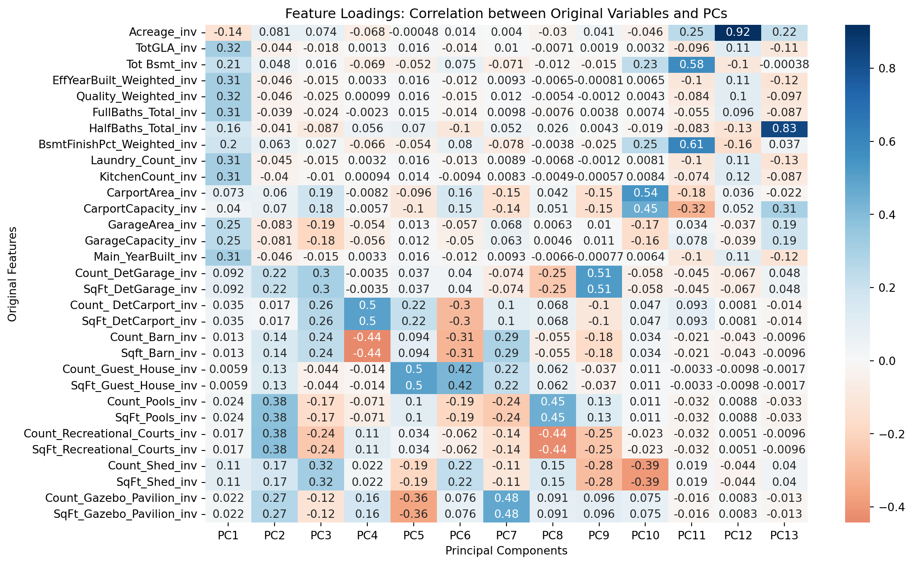
:::
reducer = umap.UMAP(
n_neighbors=50,
min_dist=0.01,
random_state=42
)umap_embeddings = reducer.fit_transform(pca_df)/Users/melaniejensen/.pyenv/versions/3.12.12/lib/python3.12/site-packages/umap/umap_.py:1952: UserWarning: n_jobs value 1 overridden to 1 by setting random_state. Use no seed for parallelism.
warn(KMeans Cluster Scree Plot
::: {#cell-identify number of clusters .cell execution_count=17}
inertia = []
k_range = range(1, 11)
for k in k_range:
kmeans_test = KMeans(n_clusters=k, random_state=42, n_init="auto")
kmeans_test.fit(pca_df)
inertia.append(kmeans_test.inertia_)
plt.figure(figsize=(8, 4))
plt.plot(k_range, inertia, marker='o', linestyle='--')
plt.title('Elbow Method to Identify Optimal Clusters')
plt.xlabel('Number of Clusters (k)')
plt.ylabel('Inertia (Within-Cluster Sum of Squares)')
plt.xticks(k_range)
plt.grid(True)
plt.show()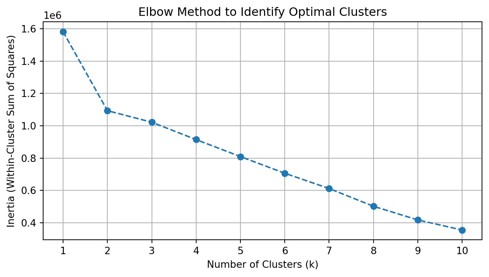
:::
KMeans Clustering on UMAP
::: {#cell-final clustering .cell execution_count=18}
optimal_k = 13
final_model = KMeans(n_clusters=optimal_k, random_state=42, n_init="auto")
labels = final_model.fit_predict(umap_embeddings)
plt.figure(figsize=(10, 7))
plt.scatter(umap_embeddings[:, 0], umap_embeddings[:, 1], c=labels, cmap='viridis', s=5)
plt.colorbar(label='Cluster Label')
plt.title(f"UMAP Projection with {optimal_k} K-Means Clusters")
plt.show()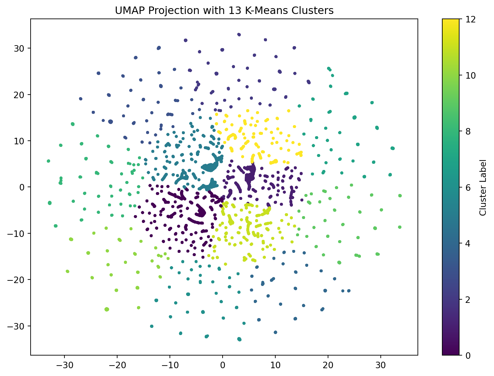
:::
HDBSCAN Clustering on UMAP
for i in range(100,600,100):
print(f"HDBSCAN with min_cluster_size = {i}")
clusterer = hdbscan.HDBSCAN(min_cluster_size=i, gen_min_span_tree=True)
cluster_labels = clusterer.fit_predict(umap_embeddings)
n_clusters = len(set(cluster_labels)) - (1 if -1 in cluster_labels else 0)
score = validity.validity_index(umap_embeddings.astype('double'), cluster_labels)
print(f"DBCV Score: {score:.3f}")
plt.title(f"UMAP Projection with {n_clusters} HDBSCAN Clusters")
plt.figure(figsize=(10, 8))
plt.scatter(
umap_embeddings[:, 0],
umap_embeddings[:, 1],
c=cluster_labels,
cmap='Spectral',
s=5)
plt.title('Housing Clusters via HDBSCAN (Organic Shapes)')
plt.colorbar(label='Cluster Label')
plt.title(f"UMAP Projection with {n_clusters} HDBSCAN Clusters")
plt.show()HDBSCAN with min_cluster_size = 100
DBCV Score: 0.433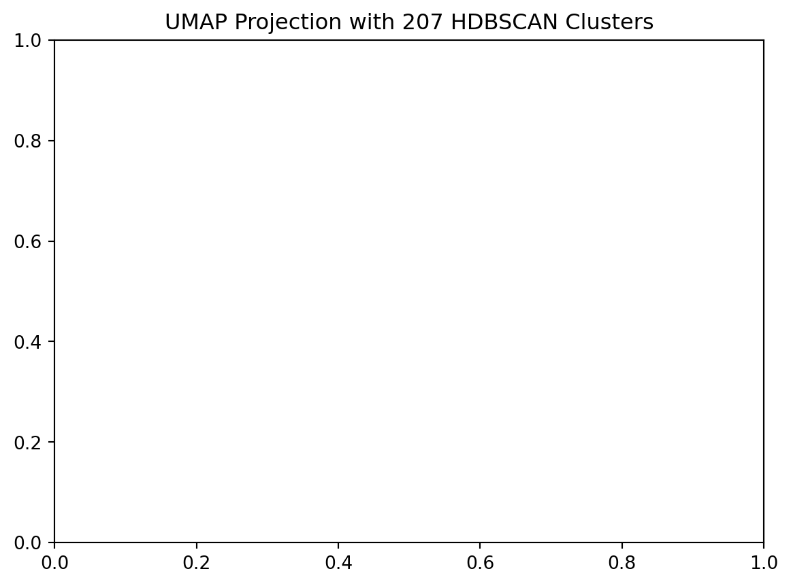
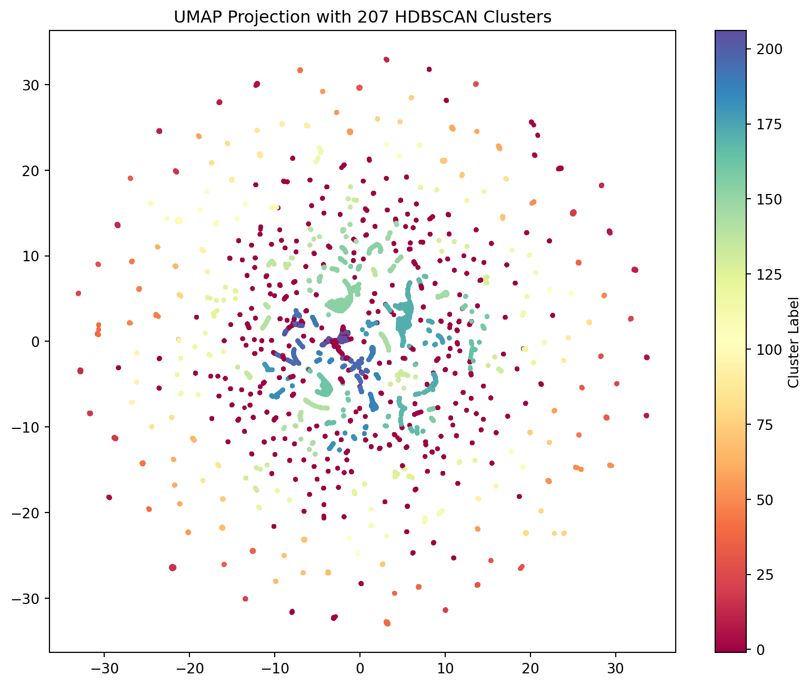
HDBSCAN with min_cluster_size = 200
DBCV Score: 0.204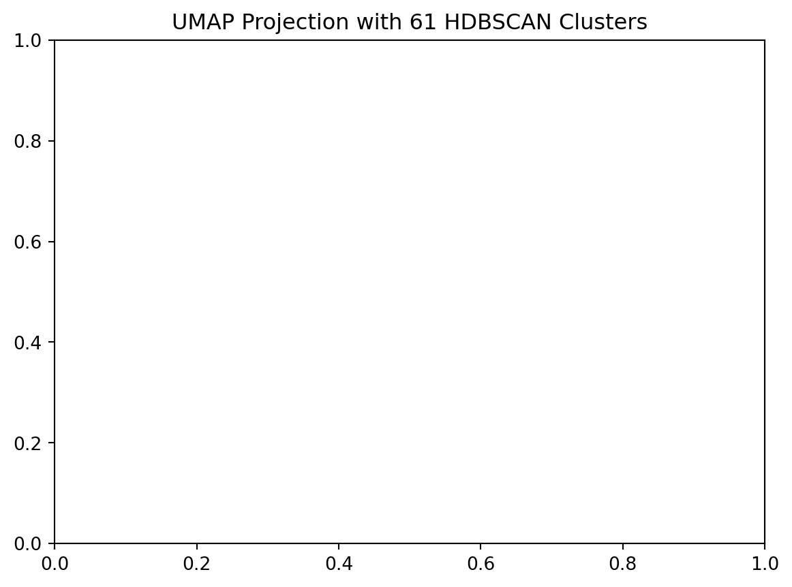

HDBSCAN with min_cluster_size = 300
DBCV Score: 0.105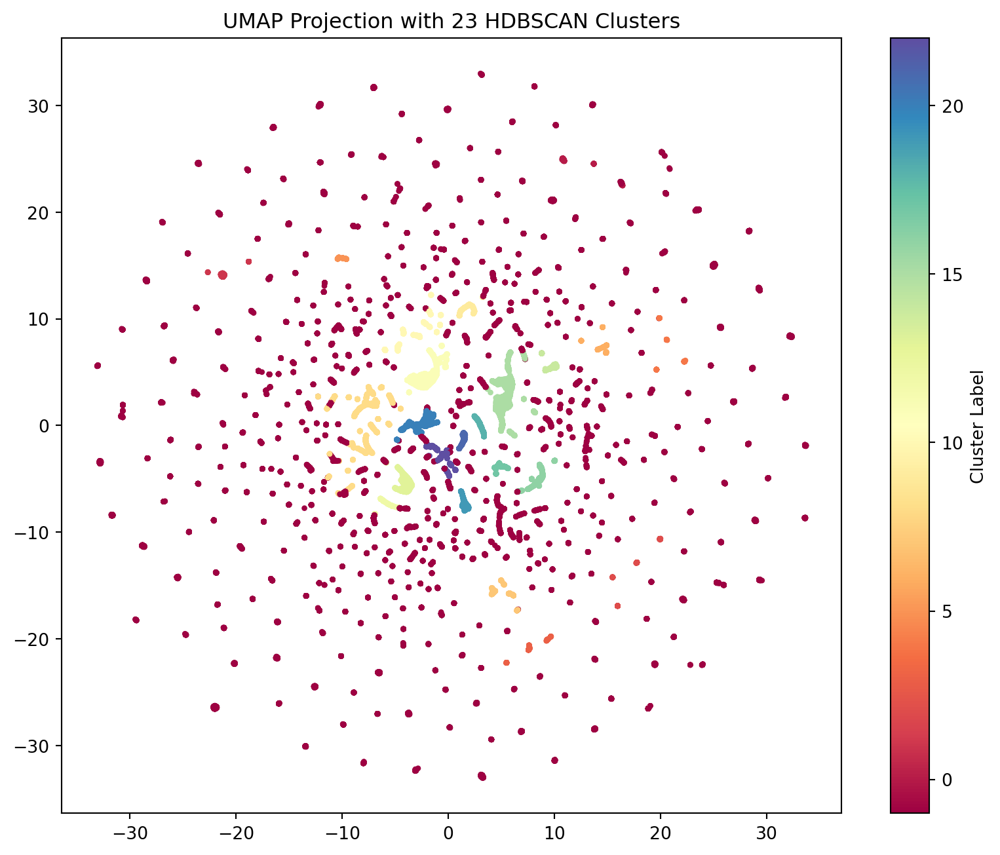
HDBSCAN with min_cluster_size = 400
DBCV Score: 0.109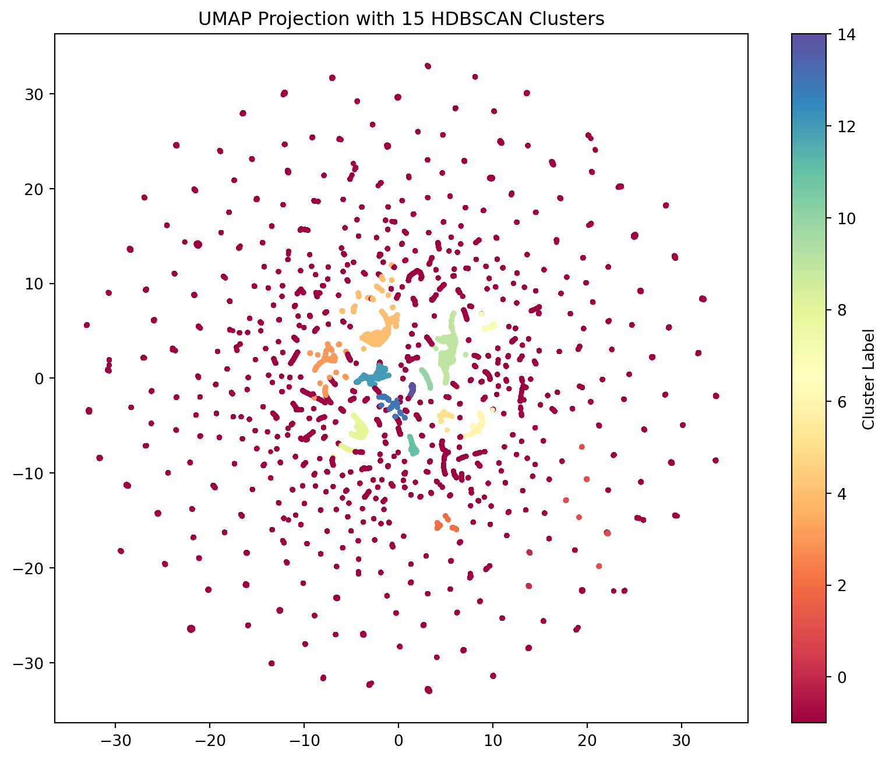
HDBSCAN with min_cluster_size = 500
DBCV Score: 0.128
numeric_parcel_data['Cluster_ID'] = cluster_labels
cluster_profile = numeric_parcel_data.groupby('Cluster_ID').mean()
print(cluster_profile.T)Cluster_ID -1 0 1 2 \
Acreage 18.336733 1.694803 4.232411 0.381417
TotGLA 376.522894 0.000000 2026.118644 2357.978076
Tot Bsmt 105.781521 0.000000 829.546139 0.000000
EffYearBuilt_Weighted 455.625879 0.000000 1947.155506 2016.424035
Quality_Weighted 0.730694 0.000000 3.184073 3.650960
FullBaths_Total 0.485541 0.000000 2.340866 2.204629
HalfBaths_Total 0.099164 0.000000 0.391714 1.057247
BsmtFinishPct_Weighted 0.048823 0.000000 0.243597 0.000000
Laundry_Count 0.243168 0.000000 1.035782 1.038977
KitchenCount 0.236682 0.000000 1.048964 1.046285
CarportArea 16.016536 0.000000 25.001883 0.000000
CarportCapacity 0.015921 0.000000 0.003766 0.000000
GarageArea 70.642465 0.000000 365.670433 787.194884
GarageCapacity 0.263754 0.000000 1.384181 2.781973
Main_YearBuilt 452.677562 0.000000 1927.000000 2010.567600
Count_DetGarage 0.023714 0.000000 0.915254 0.000000
SqFt_DetGarage 19.619315 0.000000 790.192090 0.000000
Count_ DetCarport 0.013177 0.000000 0.003766 0.000000
SqFt_DetCarport 4.086038 0.000000 0.783427 0.000000
Count_Barn 0.004333 0.000000 0.005650 0.000000
Sqft_Barn 13.853048 0.000000 13.529190 0.000000
Count_Guest_House 0.000154 0.000000 0.001883 0.000000
SqFt_Guest_House 0.044275 0.000000 1.647834 0.000000
Count_Pools 0.000103 0.000975 0.190207 0.000000
SqFt_Pools 0.072297 3.000000 91.598870 0.000000
Count_Recreational_Courts 0.000256 0.000000 0.101695 0.000000
SqFt_Recreational_Courts 0.754756 0.000000 177.617702 0.000000
Count_Shed 0.046839 0.000000 0.849341 0.000000
SqFt_Shed 44.036635 0.000000 287.860640 0.000000
Count_Gazebo_Pavilion 0.002641 0.000000 0.016949 0.000000
SqFt_Gazebo_Pavilion 0.787904 0.000000 4.483992 0.000000
Cluster_ID 3 4 5 6 \
Acreage 0.982635 6.759167 0.952322 9.586915
TotGLA 1715.797799 1963.410861 1668.413005 2113.201967
Tot Bsmt 1517.624949 475.091189 1392.783831 1365.997377
EffYearBuilt_Weighted 2011.217483 1968.827863 2008.167963 2011.410784
Quality_Weighted 3.369847 2.998924 3.299155 3.539513
FullBaths_Total 2.684876 2.200820 2.710018 2.533115
HalfBaths_Total 0.000000 0.299180 0.000000 0.859672
BsmtFinishPct_Weighted 0.722308 0.137387 0.742548 0.624643
Laundry_Count 1.028944 1.039959 1.029877 1.052459
KitchenCount 1.050958 1.060451 1.066784 1.082623
CarportArea 0.000000 38.840164 0.000000 0.000000
CarportCapacity 0.000000 0.000000 0.000000 0.000000
GarageArea 659.546270 313.729508 609.778559 650.291803
GarageCapacity 2.552385 1.190574 2.402460 2.423607
Main_YearBuilt 2000.587036 1954.908811 1992.815466 1999.491803
Count_DetGarage 0.000000 0.944672 0.000000 0.000000
SqFt_DetGarage 0.000000 852.193648 0.000000 0.000000
Count_ DetCarport 0.000000 0.000000 0.000000 0.000000
SqFt_DetCarport 0.000000 0.000000 0.000000 0.000000
Count_Barn 0.000000 0.000000 0.000000 0.000000
Sqft_Barn 0.000000 0.000000 0.000000 0.000000
Count_Guest_House 0.000000 0.001025 0.000000 0.000000
SqFt_Guest_House 0.000000 1.475410 0.000000 0.000000
Count_Pools 0.000000 0.000000 0.000000 0.000000
SqFt_Pools 0.000000 0.000000 0.000000 0.000000
Count_Recreational_Courts 0.000000 0.000000 0.001757 0.000000
SqFt_Recreational_Courts 0.000000 0.000000 3.149385 0.000000
Count_Shed 0.000000 0.000000 1.154657 0.284590
SqFt_Shed 0.000000 0.000000 234.254833 149.184918
Count_Gazebo_Pavilion 0.000000 0.000000 0.000000 0.000000
SqFt_Gazebo_Pavilion 0.000000 0.000000 0.000000 0.000000
Cluster_ID 7 8 9 10
Acreage 0.451026 0.360936 3.151010 13.889657
TotGLA 1828.140428 1695.228522 1418.329470 1561.472169
Tot Bsmt 0.000000 1544.281787 1029.377483 189.669546
EffYearBuilt_Weighted 2001.016772 2015.025973 2001.504073 1916.957261
Quality_Weighted 3.415253 3.476343 3.088960 2.775813
FullBaths_Total 2.145287 2.137457 2.311258 1.822137
HalfBaths_Total 0.000000 0.000000 0.000000 0.220409
BsmtFinishPct_Weighted 0.000000 0.000000 0.761385 0.106628
Laundry_Count 1.018950 1.017182 1.100993 1.000320
KitchenCount 1.011176 1.017182 1.259934 0.998401
CarportArea 0.000000 0.000000 0.000000 10.813180
CarportCapacity 0.000000 0.000000 0.000000 0.000000
GarageArea 643.680758 653.635739 0.000000 161.756558
GarageCapacity 2.427600 2.549828 0.001656 0.604287
Main_YearBuilt 1994.310982 2008.520619 1967.812914 1900.779591
Count_DetGarage 0.000000 0.000000 0.000000 0.095329
SqFt_DetGarage 0.000000 0.000000 0.000000 87.182022
Count_ DetCarport 0.000000 0.000000 0.000000 0.000000
SqFt_DetCarport 0.000000 0.000000 0.000000 0.000000
Count_Barn 0.000000 0.000000 0.000000 0.000000
Sqft_Barn 0.000000 0.000000 0.000000 0.000000
Count_Guest_House 0.000000 0.000000 0.001656 0.005438
SqFt_Guest_House 0.000000 0.000000 0.173841 2.743442
Count_Pools 0.000000 0.000000 0.000000 0.000320
SqFt_Pools 0.000000 0.000000 0.000000 0.255918
Count_Recreational_Courts 0.000000 0.000000 0.000000 0.000640
SqFt_Recreational_Courts 0.000000 0.000000 0.000000 1.215611
Count_Shed 0.000000 0.000000 0.000000 0.298784
SqFt_Shed 0.000000 0.000000 0.000000 63.856366
Count_Gazebo_Pavilion 0.000000 0.000000 0.000000 0.000000
SqFt_Gazebo_Pavilion 0.000000 0.000000 0.000000 0.000000 /var/folders/2s/bxjklpkx53v39lgfmtz7pr380000gn/T/ipykernel_71352/878546522.py:1: SettingWithCopyWarning:
A value is trying to be set on a copy of a slice from a DataFrame.
Try using .loc[row_indexer,col_indexer] = value instead
See the caveats in the documentation: https://pandas.pydata.org/pandas-docs/stable/user_guide/indexing.html#returning-a-view-versus-a-copy
numeric_parcel_data['Cluster_ID'] = cluster_labelsPCA Clustering on UMAP
::: {#cell-PCA Clustering on UMAP .cell execution_count=21}
dominant_pc = pca_df.idxmax(axis=1)
plt.figure(figsize=(12, 8))
sns.scatterplot(
x=umap_embeddings[:, 0],
y=umap_embeddings[:, 1],
hue=dominant_pc,
palette='tab20',
s=10,
alpha=0.8
)
plt.title("UMAP Colored by Most Dominant Principal Component (PC1-PC13)")
plt.legend(bbox_to_anchor=(1.05, 1), loc='upper right', title='Dominant PC')
plt.show()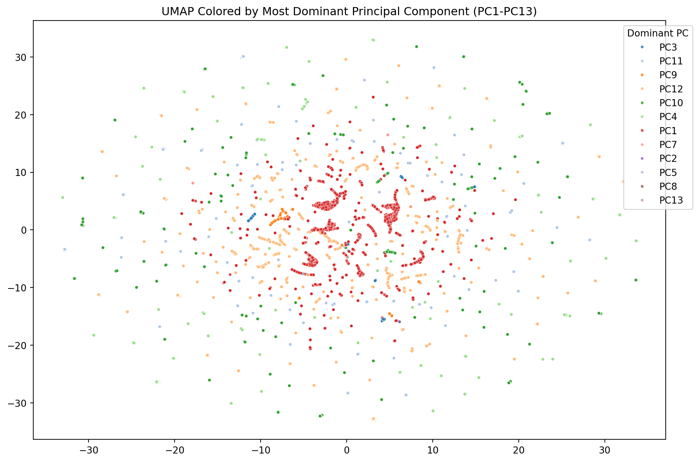
:::
Key Findings: - PCA Components: - PC1: contains standard variables. - PC2: focus on recreational outdoor features (ex pools, rec courts, etc) - PC3: focus on utility outdoor features (ex sheds, barns, etc) - PC4: focus on aggrecultural vs recreational utility features (carport v barn) - PC5: focus on guest features vs personal features (guest house v gazebo) - PC6: - PC7: - PC8: - PC9: focus on external vehical storage vs general utility (detached garage v shed) - PC10: focus on attached vehical storage vs general utility (carport v shed) - PC11: focus on basement space and completion over vehical storage - PC12: focus on the land - PC13: focus on half-bath
Essentially, the standard features are evaluated in the first PC. All subsequent components look at the different combonations of features for various focuses, such as recreation, utility, etc.
The first PC (standard features) account for approximately 30% of variation in the home. All other feature account for 70% of what makes one home different from one another, with the biggest focuses for differentiation being recreation, utility, and, storage. Features such as half-bathrooms, while accounting for varation take up minimal percentage of differentiation.
This is specifically with Iron county properties. As the majority of these homes are rural and thus are chosen based on these features, it makes sense that they account for 70% of home variation.
If the final project is a program that will take features and output price, it may also be useful to adapt this toward the buyer themself, and allow them to determine their focus, placing weights on the pc’s themselves based on desired focus.
Supervised Learning
Create Merged Dataset
parcel_export = pd.read_excel("/Users/melaniejensen/Library/CloudStorage/OneDrive-SouthernUtahUniversity/Math-4810_Capstone/data/Parcel Export.xlsx", sheet_name="Full Parcel Summary")
residential_export = pd.read_excel("/Users/melaniejensen/Library/CloudStorage/OneDrive-SouthernUtahUniversity/Math-4810_Capstone/data/2025 MLS Residential Sales.xlsm", sheet_name = "Sales")
land_export = pd.read_excel("/Users/melaniejensen/Library/CloudStorage/OneDrive-SouthernUtahUniversity/Math-4810_Capstone/data/2022 - 2025 MLS Land Sales.xlsm", sheet_name = "Sales")
multi_fam_export = pd.read_excel("/Users/melaniejensen/Library/CloudStorage/OneDrive-SouthernUtahUniversity/Math-4810_Capstone/data/2022 - 2025 Multi-Family MLS Export.xlsm", sheet_name = "textexport (3)")
res = residential_export.rename(columns={'Parcel Number': 'ParcelId'})
land = land_export.rename(columns={'Parcel Number': 'ParcelId'})
multi = multi_fam_export.rename(columns={'Parcel Number': 'ParcelId'})
property_pool = pd.concat([res, land, multi], ignore_index=True, sort=False)
merged_df = pd.merge(
parcel_export,
property_pool,
on='ParcelId',
how='left'
)
merged_df.to_csv('all_merged_w_parcel.csv', index=False)View Merged Numeric Variables
::: {#cell-view all numberic columns .cell execution_count=23}
all_numeric_cols = merged_df.select_dtypes(include=[np.number]).columns.tolist()
all_numeric_cols.sort()
all_numeric_cols['3/4 Baths',
'Acreage',
'Basement SqFt',
'BsmtFinishPct_Weighted',
'Cancel Date',
'CarportArea',
'CarportCapacity',
'Concessions Amount',
'Concessions4',
'Count_ DetCarport',
'Count_Barn',
'Count_DetGarage',
'Count_Gazebo_Pavilion',
'Count_Guest_House',
'Count_Pools',
'Count_Recreational_Courts',
'Count_Shed',
'Days on Market',
'EffYearBuilt_Weighted',
'End Date',
'Fallthrough Date',
'Finished SqFt',
'Fireplaces2',
'Full Baths',
'Full Baths3',
'FullBaths_Total',
'Garage Capacity',
'GarageArea',
'GarageCapacity',
'HOA Dues $',
'Half Baths',
'HalfBaths_Total',
'ImpCode',
'ImpOnly',
'Jurisdiction',
'KitchenCount',
'Kitchens',
'Lat',
'Laundry_Count',
'List Number',
'List Price',
'Lng',
'Lofts',
'Lot Acres',
'Lot Dimensions',
'MLS Area',
'Main SqFt',
'Main_YearBuilt',
'Marketing Begin Date',
'Original List Price',
'Postal Code',
'PropType ',
'Quality_Weighted',
'Res Imp Count',
'ReviewedDate',
'Sold Price',
'Sold Price Per/SqFt',
'Special Taxes (SID)$',
'SpecificPropType',
'SqFt_DetCarport',
'SqFt_DetGarage',
'SqFt_Gazebo_Pavilion',
'SqFt_Guest_House',
'SqFt_Pools',
'SqFt_Recreational_Courts',
'SqFt_Shed',
'Sqft_Barn',
'TaxYear',
'Tot Bsmt',
'TotGLA',
'Total Bedrooms',
'Total SqFt',
'Total Taxes',
'Total Units',
'Upstairs SqFt',
'Withdrawal Date',
'Year Built']:::
View Merged Non-Numeric Variables
::: {#cell-view all non-numeric columns .cell execution_count=24}
all_non_numeric_cols = merged_df.select_dtypes(exclude=[np.number]).columns.tolist()
all_non_numeric_cols.sort()
all_non_numeric_cols['Accessability',
'Active',
'Address',
'Address 2',
'Agency Email',
'Agency Name',
'Agency Phone',
'Area',
'Basement',
'Book Section',
'Bsmt % Finish',
'Card Format',
'City',
'Co-Listing Agent',
'Co-Selling Agent',
'Concessions',
'Concessions Available',
'Contingent',
'Contingent Remarks',
'County',
'Covered Parking',
'Delayed Marketing Exempt Listing',
'Directions',
'Elementary',
'Features',
'Financing Remarks',
'Fireplaces',
'For Sale or Rent',
'Garage Type',
'HOA',
'HOA Dues Frequency',
'How Sold',
'IsIncluded',
'Jr. High',
'Laundry',
'Listing Agent',
'Listing Agent Email',
'Listing Agent Phone',
'Listing Date',
'Listing Type',
'MainImp.GroupCode',
'Main_StyleDesc',
'NbhdCode2',
'Owner',
'Owner/Agent',
'PUD',
'Parcel ID Check',
'ParcelId',
'Parking Covered',
'Parking Uncovered',
'Photo URL',
'Private Remarks',
'PropTypeDescription',
'Property Type',
'Public Remarks',
'RecordType',
'ReviewedBy',
'Road Condition',
'Rooms',
'Selling Agency',
'Selling Agency Email',
'Selling Agency Phone',
'Selling Agent',
'Selling Agent Email',
'Selling Agent Phone',
'Senior Community',
'Sold Date',
'SpecificPropTypeDescription',
'Square Foot Source',
'Sr. High',
'St. #',
'St. Dir.',
'State/Province',
'Status',
'Status Change Date',
'Street Direction Sfx',
'Street Name',
'Street Suffix',
'Sub Type',
'Subdivision_x',
'Subdivision_y',
'Tax Serial #',
'Type',
'Under Contract Date',
'Utilities',
'Zoned',
'mod_timestamp']:::
Identify City
::: {#cell-city identification .cell execution_count=25}
merged_df['city'] = [res['name'] if pd.notnull(lat) and pd.notnull(lng) else "Unknown"
for res, lat, lng in zip(rg.search([(r['Lat'], r['Lng']) if pd.notnull(r['Lat']) else (0,0)
for _, r in merged_df.iterrows()]), merged_df['Lat'], merged_df['Lng'])]
merged_df['city'].value_counts()Loading formatted geocoded file...city
Cedar City 24138
Enterprise 12232
Enoch 8953
Parowan 8805
Takoradi 1722
Unknown 1355
Pioche 463
Milford 94
Panguitch 69
Beaver 43
Toquerville 30
Name: count, dtype: int64:::
data_to_transform = merged_df[numeric_cols].fillna(0)
pt = PowerTransformer(method='yeo-johnson')
transformed_data = pd.DataFrame(index=data_to_transform.index)
for i in data_to_transform.columns:
new_col_name = f"{i}_inv"
transformed_data[new_col_name] = pt.fit_transform(data_to_transform[[i]])
scaled_data = scaler.fit_transform(transformed_data)
pca_output = pca.transform(scaled_data)
pca_cols = [f'PC{i+1}' for i in range(pca.n_components_)]
pca_df = pd.DataFrame(pca_output, columns=pca_cols, index=merged_df.index)
merged_df = pd.concat([merged_df, pca_df], axis=1)CPI Adjusted Sales Price
::: {#cell-cpi adjustment .cell execution_count=27}
cpi.update()
merged_df['SaleYear'] = pd.to_datetime(merged_df['ReviewedDate'], unit='D', origin='1899-12-30').dt.year
unique_years = [int(y) for y in merged_df['SaleYear'].unique() if pd.notna(y)]
cpi_lookup = {}
for year in unique_years:
try:
cpi_lookup[year] = cpi.get(year)
except Exception:
cpi_lookup[year] = cpi.get(2024)
target_cpi = cpi.get(2024)
merged_df['cpi_index_at_sale'] = merged_df['SaleYear'].map(cpi_lookup)
merged_df['CPI Adjusted Sold Price'] = (merged_df['Sold Price'] * target_cpi) / merged_df['cpi_index_at_sale']
merged_df[['Sold Price', 'CPI Adjusted Sold Price']].describe()/Users/melaniejensen/.pyenv/versions/3.12.12/lib/python3.12/site-packages/cpi/download.py:175: DtypeWarning: Columns (3,4) have mixed types. Specify dtype option on import or set low_memory=False.
df = pd.read_csv(io.StringIO(response.text), sep="\t")
/Users/melaniejensen/.pyenv/versions/3.12.12/lib/python3.12/site-packages/cpi/download.py:175: DtypeWarning: Columns (3,4) have mixed types. Specify dtype option on import or set low_memory=False.
df = pd.read_csv(io.StringIO(response.text), sep="\t")
/Users/melaniejensen/.pyenv/versions/3.12.12/lib/python3.12/site-packages/cpi/download.py:175: DtypeWarning: Columns (3,4) have mixed types. Specify dtype option on import or set low_memory=False.
df = pd.read_csv(io.StringIO(response.text), sep="\t")
/Users/melaniejensen/.pyenv/versions/3.12.12/lib/python3.12/site-packages/cpi/download.py:175: DtypeWarning: Columns (3,4) have mixed types. Specify dtype option on import or set low_memory=False.
df = pd.read_csv(io.StringIO(response.text), sep="\t")| Sold Price | CPI Adjusted Sold Price | |
|---|---|---|
| count | 8.471000e+03 | 8.469000e+03 |
| mean | 4.245680e+05 | 4.216113e+05 |
| std | 1.892971e+05 | 1.874102e+05 |
| min | 0.000000e+00 | 0.000000e+00 |
| 25% | 3.148500e+05 | 3.116984e+05 |
| 50% | 3.900000e+05 | 3.899000e+05 |
| 75% | 4.950000e+05 | 4.890000e+05 |
| max | 2.370000e+06 | 2.370000e+06 |
:::
Price Evaluation
::: {#cell-price eval .cell execution_count=28}
sns.set_theme(style="whitegrid")
fig, axes = plt.subplots(1, 2, figsize=(16, 6))
sns.histplot(merged_df['Sold Price'], bins=50, kde=True, ax=axes[0], color='skyblue')
axes[0].set_title('Original Sold Price (Nominal)', fontsize=14)
axes[0].set_xlabel('Price ($)')
axes[0].xaxis.set_major_formatter(ticker.StrMethodFormatter('${x:,.0f}'))
sns.histplot(merged_df['CPI Adjusted Sold Price'], bins=50, kde=True, ax=axes[1], color='salmon')
axes[1].set_title('CPI Adjusted Sold Price (Real 2025$)', fontsize=14)
axes[1].set_xlabel('Price ($)')
axes[1].xaxis.set_major_formatter(ticker.StrMethodFormatter('${x:,.0f}'))
plt.tight_layout()
plt.show()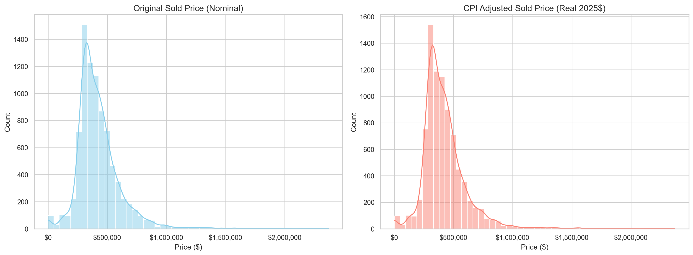
:::
BoxCox Plot
::: {#cell-boxcox on cpi price .cell execution_count=29}
clean_y = merged_df[merged_df['CPI Adjusted Sold Price'] > 0]['CPI Adjusted Sold Price']
_, opt_lambda = stats.boxcox(clean_y)
fig, ax = plt.subplots(figsize=(10, 6))
stats.boxcox_normplot(clean_y, -20, 20, plot=ax)
ax.axvline(opt_lambda, color='red', linestyle='--', label=f'Optimal $\lambda$: {opt_lambda:.4f}')
plt.legend()
plt.title('Box-Cox Log-Likelihood Plot')
plt.grid(True, alpha=0.3)
plt.show()<>:8: SyntaxWarning: invalid escape sequence '\l'
<>:8: SyntaxWarning: invalid escape sequence '\l'
/var/folders/2s/bxjklpkx53v39lgfmtz7pr380000gn/T/ipykernel_71352/36033687.py:8: SyntaxWarning: invalid escape sequence '\l'
ax.axvline(opt_lambda, color='red', linestyle='--', label=f'Optimal $\lambda$: {opt_lambda:.4f}')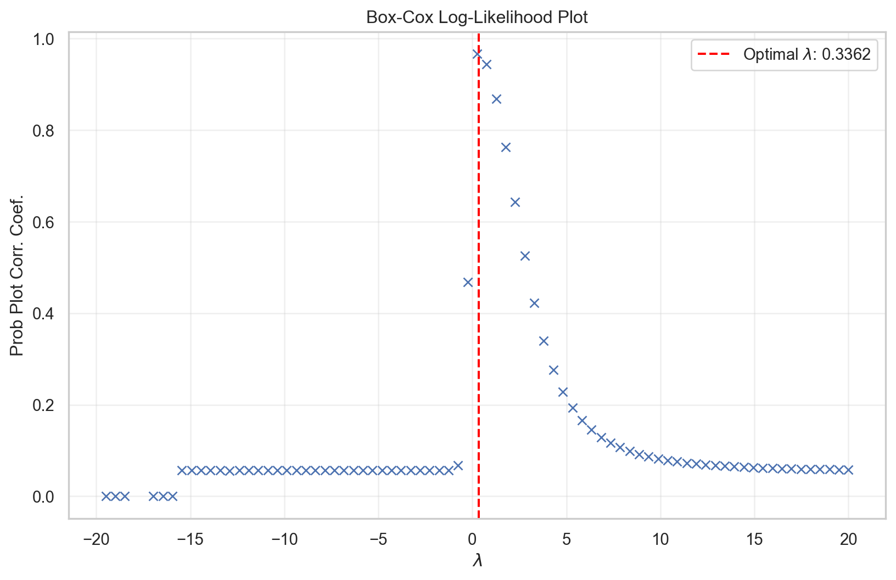
:::
Price Transformation
clean_data = merged_df[merged_df['CPI Adjusted Sold Price'] > 0]['CPI Adjusted Sold Price']
fig, axes = plt.subplots(1, 2, figsize=(16, 6))
sns.set_theme(style="whitegrid")
sns.histplot(np.log1p(clean_data), bins=50, kde=True, ax=axes[0], color='teal')
axes[0].set_title('Log Transformed Price', fontsize=14)
axes[0].set_xlabel('Log(Price)')
sns.histplot(np.sqrt(clean_data), bins=50, kde=True, ax=axes[1], color='purple')
axes[1].set_title('Square Root Transformed Price', fontsize=14)
axes[1].set_xlabel('Sqrt(Price)')
plt.tight_layout()
plt.show()
merged_df['Sqrt CPI Adjusted Sold Price'] = np.sqrt(merged_df['CPI Adjusted Sold Price'])
merged_df['Sqrt CPI Adjusted Sold Price'].describe()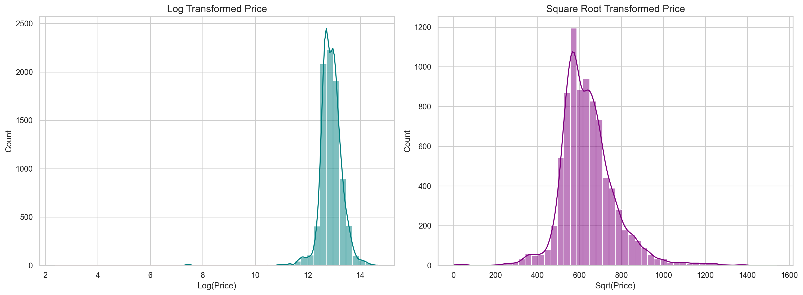
count 8469.000000
mean 633.438221
std 142.722652
min 0.000000
25% 558.299542
50% 624.419731
75% 699.285349
max 1539.480432
Name: Sqrt CPI Adjusted Sold Price, dtype: float64Primary Component Regression
X = merged_df[['PC1', 'PC2', 'PC3', 'PC4', 'PC5', 'PC6', 'PC7', 'PC8', 'PC9', 'PC10', 'PC11', 'PC12', 'PC13']]
y = merged_df['Sqrt CPI Adjusted Sold Price']
mask = y.notna()
X, y = X[mask], y[mask]
X_train, X_test, y_train, y_test = train_test_split(X, y, test_size=0.2, random_state=2026)
X_with_const = sm.add_constant(X_train)
sm_model = sm.OLS(y_train, X_with_const).fit()
print(sm_model.summary())
vif_data = pd.DataFrame()
vif_data["feature"] = X_with_const.columns
vif_data["VIF"] = [variance_inflation_factor(X_with_const.values, i)
for i in range(len(X_with_const.columns))]
print(vif_data.sort_values(by="VIF", ascending=False)) OLS Regression Results
========================================================================================
Dep. Variable: Sqrt CPI Adjusted Sold Price R-squared: 0.285
Model: OLS Adj. R-squared: 0.284
Method: Least Squares F-statistic: 207.3
Date: Fri, 27 Feb 2026 Prob (F-statistic): 0.00
Time: 09:58:48 Log-Likelihood: -42108.
No. Observations: 6775 AIC: 8.424e+04
Df Residuals: 6761 BIC: 8.434e+04
Df Model: 13
Covariance Type: nonrobust
==============================================================================
coef std err t P>|t| [0.025 0.975]
------------------------------------------------------------------------------
const 671.3390 3.619 185.482 0.000 664.244 678.434
PC1 -1.4480 0.979 -1.479 0.139 -3.367 0.471
PC2 10.8828 0.918 11.856 0.000 9.083 12.682
PC3 -0.9912 0.801 -1.237 0.216 -2.562 0.579
PC4 -11.8402 0.788 -15.032 0.000 -13.384 -10.296
PC5 -0.4351 0.944 -0.461 0.645 -2.286 1.416
PC6 0.0710 0.922 0.077 0.939 -1.737 1.879
PC7 -0.1284 0.912 -0.141 0.888 -1.916 1.659
PC8 -3.2435 1.011 -3.208 0.001 -5.226 -1.262
PC9 8.9847 0.927 9.692 0.000 7.167 10.802
PC10 -3.8824 0.934 -4.156 0.000 -5.714 -2.051
PC11 44.6430 1.208 36.949 0.000 42.275 47.012
PC12 87.9426 2.695 32.632 0.000 82.660 93.226
PC13 30.2995 1.522 19.913 0.000 27.317 33.282
==============================================================================
Omnibus: 1882.974 Durbin-Watson: 1.993
Prob(Omnibus): 0.000 Jarque-Bera (JB): 24892.473
Skew: -0.957 Prob(JB): 0.00
Kurtosis: 12.193 Cond. No. 10.3
==============================================================================
Notes:
[1] Standard Errors assume that the covariance matrix of the errors is correctly specified.
feature VIF
0 const 6.043072
12 PC12 1.620867
1 PC1 1.544146
13 PC13 1.494614
11 PC11 1.383479
2 PC2 1.168315
5 PC5 1.164134
7 PC7 1.125575
6 PC6 1.125246
3 PC3 1.094661
4 PC4 1.061337
10 PC10 1.038623
9 PC9 1.026177
8 PC8 1.022681This is the Physical Property Effect. Approximately 30% of the variance in price is explained by the weighted features of the home.
Pre-PCA Regression
X = merged_df[numeric_cols].fillna(0)
y = merged_df['Sqrt CPI Adjusted Sold Price']
mask = y.notna()
X, y = X[mask], y[mask]
X_train, X_test, y_train, y_test = train_test_split(X, y, test_size=0.2, random_state=2026)
X_with_const = sm.add_constant(X_train)
sm_model = sm.OLS(y_train, X_with_const).fit()
print(sm_model.summary())
vif_data = pd.DataFrame()
vif_data["feature"] = X_with_const.columns
vif_data["VIF"] = [variance_inflation_factor(X_with_const.values, i)
for i in range(len(X_with_const.columns))]
print(vif_data.sort_values(by="VIF", ascending=False)) OLS Regression Results
========================================================================================
Dep. Variable: Sqrt CPI Adjusted Sold Price R-squared: 0.484
Model: OLS Adj. R-squared: 0.481
Method: Least Squares F-statistic: 203.7
Date: Fri, 27 Feb 2026 Prob (F-statistic): 0.00
Time: 09:58:48 Log-Likelihood: -41006.
No. Observations: 6775 AIC: 8.208e+04
Df Residuals: 6743 BIC: 8.229e+04
Df Model: 31
Covariance Type: nonrobust
=============================================================================================
coef std err t P>|t| [0.025 0.975]
---------------------------------------------------------------------------------------------
const 564.0150 4.201 134.245 0.000 555.779 572.251
Acreage 4.4738 0.424 10.563 0.000 3.644 5.304
TotGLA 0.1106 0.004 30.462 0.000 0.104 0.118
Tot Bsmt 0.0416 0.003 15.421 0.000 0.036 0.047
EffYearBuilt_Weighted -0.2606 0.120 -2.164 0.030 -0.497 -0.025
Quality_Weighted 46.4397 3.030 15.329 0.000 40.501 52.379
FullBaths_Total -3.1202 3.062 -1.019 0.308 -9.122 2.882
HalfBaths_Total -33.0046 2.802 -11.780 0.000 -38.497 -27.512
BsmtFinishPct_Weighted 36.3948 5.555 6.552 0.000 25.506 47.284
Laundry_Count -2.8292 8.181 -0.346 0.729 -18.867 13.209
KitchenCount 1.7034 6.780 0.251 0.802 -11.587 14.994
CarportArea 0.0706 0.017 4.261 0.000 0.038 0.103
CarportCapacity -12.8534 7.277 -1.766 0.077 -27.119 1.412
GarageArea 0.0704 0.008 9.321 0.000 0.056 0.085
GarageCapacity -1.9296 1.976 -0.976 0.329 -5.804 1.945
Main_YearBuilt 0.1068 0.122 0.878 0.380 -0.132 0.345
Count_DetGarage 17.5565 7.590 2.313 0.021 2.678 32.435
SqFt_DetGarage 0.0255 0.007 3.650 0.000 0.012 0.039
Count_ DetCarport -12.2928 12.123 -1.014 0.311 -36.057 11.472
SqFt_DetCarport 0.0209 0.034 0.611 0.541 -0.046 0.088
Count_Barn 49.7795 30.889 1.612 0.107 -10.773 110.332
Sqft_Barn 0.0047 0.017 0.272 0.786 -0.029 0.039
Count_Guest_House 341.6486 290.612 1.176 0.240 -228.042 911.339
SqFt_Guest_House -1.7106 1.356 -1.261 0.207 -4.370 0.949
Count_Pools 38.9031 36.294 1.072 0.284 -32.244 110.051
SqFt_Pools -0.3083 0.183 -1.687 0.092 -0.666 0.050
Count_Recreational_Courts -88.5585 143.072 -0.619 0.536 -369.024 191.907
SqFt_Recreational_Courts 0.0833 0.107 0.780 0.435 -0.126 0.293
Count_Shed 2.5707 3.924 0.655 0.512 -5.121 10.262
SqFt_Shed -0.0038 0.011 -0.364 0.716 -0.024 0.017
Count_Gazebo_Pavilion 53.0459 34.866 1.521 0.128 -15.303 121.395
SqFt_Gazebo_Pavilion -0.3660 0.157 -2.337 0.019 -0.673 -0.059
==============================================================================
Omnibus: 4042.256 Durbin-Watson: 1.986
Prob(Omnibus): 0.000 Jarque-Bera (JB): 119695.097
Skew: -2.338 Prob(JB): 0.00
Kurtosis: 23.054 Cond. No. 7.50e+05
==============================================================================
Notes:
[1] Standard Errors assume that the covariance matrix of the errors is correctly specified.
[2] The condition number is large, 7.5e+05. This might indicate that there are
strong multicollinearity or other numerical problems.
feature VIF
15 Main_YearBuilt 3103.788815
4 EffYearBuilt_Weighted 3065.655487
23 SqFt_Guest_House 47.640107
22 Count_Guest_House 47.627853
26 Count_Recreational_Courts 13.458923
27 SqFt_Recreational_Courts 13.229463
0 const 11.244707
5 Quality_Weighted 6.882671
24 Count_Pools 5.196083
25 SqFt_Pools 5.174715
9 Laundry_Count 4.852767
6 FullBaths_Total 4.456338
13 GarageArea 4.163046
2 TotGLA 4.119720
14 GarageCapacity 3.855262
10 KitchenCount 3.744640
30 Count_Gazebo_Pavilion 3.413992
31 SqFt_Gazebo_Pavilion 3.232883
21 Sqft_Barn 2.792220
20 Count_Barn 2.768442
16 Count_DetGarage 2.692618
8 BsmtFinishPct_Weighted 2.677584
17 SqFt_DetGarage 2.667627
3 Tot Bsmt 2.226790
18 Count_ DetCarport 2.160068
19 SqFt_DetCarport 2.089658
11 CarportArea 1.679029
12 CarportCapacity 1.525499
28 Count_Shed 1.484609
29 SqFt_Shed 1.391041
7 HalfBaths_Total 1.252252
1 Acreage 1.093759The reason the PCA’s were used initially are because the PC’s are orthgonal to eachother, which means there is no multicollinearity between the components. In a model using the same variables as what was used to compute the PC’s, we do see a higher \(R^2\) value, but that is due to the overfitting of the model which is a result of the multicollinearity evidenced by the VIF output.